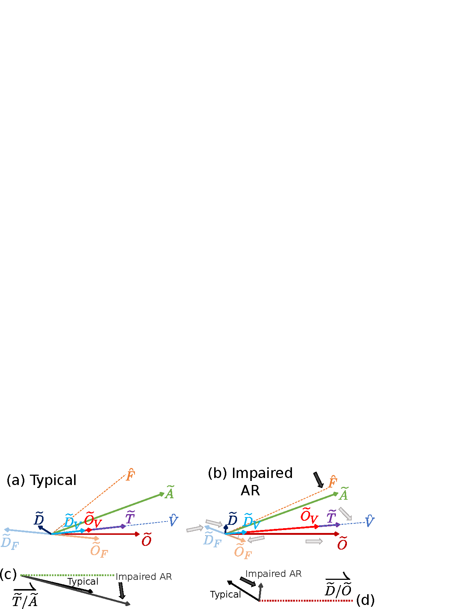

Introduction to Wavelet Coherent Hemodynamics Spectroscopy
Introduction to Wavelet Coherent Hemodynamics Spectroscopy
Hemodynamic Oscillations
Measurements of hemodynamic oscillations using NIRS have been relevant for studying both diseased and healthy human brain. The oscillations in O and D concentrations and their corresponding phase and amplitude relationships, either between themselves or with respect to oscillatory physiological quantities such as ABP, have been investigated for both spontaneous and induced oscillations.
Spontaneous cerebral hemodynamic oscillations (in the broad frequency range 0.01 Hz–1 Hz) occur naturally within the human body and can have a wide range of sources, both from systemic contributions of cardiovascular dynamics (exempli gratia, from heart rate, ABP) and from local effects of metabolic and flow regulations (exempli gratia, local vascular reactivity, focal metabolism). NIRS studies of spontaneous oscillations of ΔO and ΔD have been conducted in infants and adult human subjects. Besides spontaneous oscillations, cerebral hemodynamics can be induced by several protocols based on systemic perturbations in the ABP. These protocols include paced breathing, cyclic inflation and deflation of pneumatic thigh cuffs, periodic head-up-tilting, and repeated squat-stand or sit-stand maneuvers. Even without a physiological model that provides a quantitative description of oscillations of ΔO and ΔD or their associated Õ and D̃, their relative amplitude and phase have already been correlated to healthy or diseased conditions of cerebral tissue and brain perfusion. For example, a study conducted on patients with unilateral carotid obstruction in a paced breathing protocol at 0.1 Hz found that the phase difference between Õ and D̃ is larger in the contralateral hemisphere (the healthy one) compared to the ipsilateral hemisphere (the affected one) and to healthy controls. The authors associated this result with impaired cerebral AR in the affected side of the brain. Spontaneous hemodynamic oscillations are more appealing for diagnostic purposes because they are readily available in all subjects, do not require subjective cooperation (exempli gratia paced breathing) or forcing maneuvers (exempli gratia cyclic thigh cuff occlusion and release) which may not be appropriate for some diseased individuals. However, in order to draw meaningful conclusions from any hemodynamic oscillations study, stable phase and amplitude relationships between the measured oscillating quantities are required. A preliminary study that investigated both spontaneous and induced hemodynamic oscillations in the frontal area of human subjects concluded that induced oscillations are coherent with higher incidence and are characterized by more stable phase relationship between Õ and D̃ as compared to spontaneous oscillations.
One method that we have introduced for studying hemodynamic oscillations is CHS. It differs from other methods of using hemodynamic oscillations for medical diagnostic in two aspects:
A spectrum of hemodynamic oscillations at different frequencies are investigated in order to measure the frequency-resolved phase and amplitude relationship between Õ and D̃ by considering D̃/Õ.
A dedicated mathematical model is used to translate these phase and amplitude relationships into physiological parameters useful for monitoring micro-vascular integrity, such as capillary and venous transit times and a parameter related to the effectiveness of cerebral AR.
We have demonstrated the potential of CHS in several studies, both in healthy controls and a diseased population. We have also used CHS for estimating the transfer function between ABP and T to assess cerebral AR.
One well known issue that needs to be addressed in non-invasive cerebral NIRS is the high sensitivity of optical signals to hemodynamics occurring in the superficial, extracerebral tissue layers (mainly scalp and skull) as discussed in Part [prt:deepMeas]. In the case of CHS, we need to consider the problem of extracerebral contamination. However, this problem is somewhat different than in the case of brain activation, since the driving force of hemodynamic oscillations is not a brain stimulus, but rather a systemic perturbation in ABP. Therefore, a high level of correlation between NIRS measurements at different ρs is expected. In fNIRS studies of brain activation, it is possible to observe task-related hemodynamic oscillations in the superficial tissue layers, which may be highly correlated with brain hemodynamics. However, the source of extracerebral contamination is likely to be different than in CHS. For example, in an fNIRS study, the authors found that the extracerebral contamination was mainly observed in ΔO, as a result of task-evoked sympathetic arterial vasoconstriction followed by a decrease in venous volume in the scalp. Since CHS is reliant on more systemic changes in hemodynamics, methods that localize the entire recovered signal or the 𝒮 are desirable. For this reason the preferentially deep methods based on optics itself such as MD and DS in Part [prt:deepMeas] are well tailored to CHS.
Determination of Hemodynamic Phasors with Wavelet
A key a aspect of CHS is the measurement of Õ, D̃, and Ã. Simply these phasor measurements are not sufficient, as the measurements must also be representative of true hemodynamics and exhibit stable amplitudes and phase. This leads us to the etymology of CHS, where coherent is referring to the reliability and stability of the phasors, and hemodynamics spectroscopy refers to the measurement of these phasors of hemodynamic qualities at various oscillation frequencies to make a spectrum.
CHS can be done with various measures of coherence and signal analysis. After considering various methods we have settled on a wavelet based approach. This approach uses wavelet 𝔠 as the measure of coherence and wavelet coefficients as the measure of phasors which are time and frequency resolved. The specifics of wavelet phasor analysis is in Appendix [app:phasors] and of coherence is in Appendix [app:detCoh]. To determine if the 𝔠 is significantly high we generate thresholds from random surrogate data. The generation of these thresholds is discussed in detail in and Chapter [ch:signCoh].
The phasors themselves are not easily interpreted, thus we focus on phasor ratio vectors (Appendix [app:phasors]). Additionally, 𝔠 requires a statement comparing two signals (Appendix [app:detCoh]). Therefore, for every pair of phasors there is an associated vector representing their transfer function and a 𝔠 value. In CHS the individual signals considered are of ΔO, ΔD, ΔT, and ΔA. The D̃/Õ and T̃/Ã, as well as the 𝔠(Õ,Ã), 𝔠(D̃,Ã), and 𝔠(T̃,Ã) also find particular relevance. For T̃/Ã to be considered coherent, 𝔠(T̃,Ã) must be able the significance threshold; and for D̃/Õ to be significant both 𝔠(Õ,Ã) and 𝔠(D̃,Ã) must be above threshold (Chapter [ch:signCoh]). This comes from the assumption that ABP is the chief driver in these hemodynamic oscillations.
Meanings of Select Phasors and Vectors

Note 1: A version of this diagram was presented in and .
Acronyms and Symbols: Auto-Regulation (AR); blood Flow (\(F\) subscript); blood Volume (\(V\) subscript); blood Flow unit phasor (F̆); blood Volume unit phasor (V̆); Arterial blood pressure phasor (Ã); Total-hemoglobin phasor (T̃); Oxy-hemoglobin phasor (Õ); Deoxy-hemoglobin phasor (D̃); phasor ratio T/A (T̃/Ã); and phasor ratio D/O (D̃/Õ).
In the previous section, the D̃/Õ and T̃/Ã are introduced as relevant vectors for analysis. To understand why this is we shall look at their physiological meaning. First, we should introduce the concepts of BV and BF oscillations with corresponding V̆ and F̆. ΔT is considered a surrogate for BV change and Δ(O−D) and surrogate for BF change. Therefore, T̃ is modeled as along the V̆ direction and Õ and D̃ components associated with BF (which is designated with the \(V\) subscript) are along the same direction and add to T̃. Additionally, the Õ and D̃ components associated with BF (which is designated with the \(F\) subscript) as modeled with a 180° phase difference. Finally, the F̆ is expected to have a parameter dependent phase difference between it and \(\widetilde{O}_{F}\). This phase correction for F̆ is in-fact one of the chief differences between CHS and previous work which considered Δ(O−D) as BF, as CHS temporally corrects Δ(O−D) to more directly measure BF.
Figure 1.1(a) shows all of the aforementioned phasor relationships and connects them to the measured phasors Õ, D̃, T̃, and à for an example at 0.1 Hz. Key phasor relationships follow: \[\widetilde{T}=\widetilde{O}+\widetilde{D}=\widetilde{O}_V+\widetilde{D}_V\] \[\widetilde{O}=\widetilde{O}_V+\widetilde{O}_F\] \[\widetilde{D}=\widetilde{D}_V+\widetilde{D}_F\] \[\widetilde{O}_F=-\widetilde{D}_F\]
The CHS hemodynamic model allows us to find physiological interpretations for all of these relations. The measurable Õ and D̃ are decomposed into contributions from blood volume and BF and BV (here, we neglect oscillations in the metabolic rate of oxygen). \(\widetilde{O}_V\) and \(\widetilde{D}_V\) are in phase with each other and with T̃ and V̆ as mentioned above. The relative amplitude of \(\widetilde{O}_V\) and \(\widetilde{D}_V\) is determined by the oxygen saturation of the volume-oscillating vascular compartment which is assumed to be 75 %. As described, \(\widetilde{O}_F\) and \(\widetilde{D}_F\) are in opposition of phase and have the same magnitude. \(\widetilde{O}_F\) lags F̆ as a result of the blood transit time in the microvasculature, here this was assumed to be 40° as computed with our model using typical values for the blood transit times and other model parameters. Finally, BF oscillations lead the à in the presence of AR, with a greater lead phase for more effective AR, and they are in phase with the à in the absence of AR. This is key to interpreting these phasor relations, since simply by changing the phase difference between F̆ and à all of the measured phasors also change. This model allows for interpretation of such a change in AR.
Figure 1.1(b) simulates a impaired AR compared to Figure 1.1(a) by moving F̆ closer to Ã. We have kept the amplitude of Õ, the phase of T̃ (id est the phase of V̆), and the phase angle between F̆ and \(\widetilde{O}_F\) (which reflects the blood transit time in the microvasculature) constant.
Figure 1.1(c)(d) also shows the D̃/Õ and T̃/Ã (at 0.1 Hz in this case) which is the actual output of 𝔠 threshold a wavelet CHS analysis. The key is how these vectors change with impaired AR, which can be used as an interpretation of measured CHS results. First, focusing on D̃/Õ, when AR was impaired the phase became strongly more negative and the amplitude ratio decreased. For T̃/Ã the impaired AR caused a weakly more negative phase and an increase in amplitude. This tells us that if we see these effects in measured data they can be interpreted as AR impairment. Additionally, this indicates that the strongest measure of AR is the phase of D̃/Õ. Further chapters present such data in vivo and provide physiological interpretation motivated by these models.